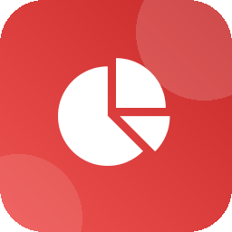
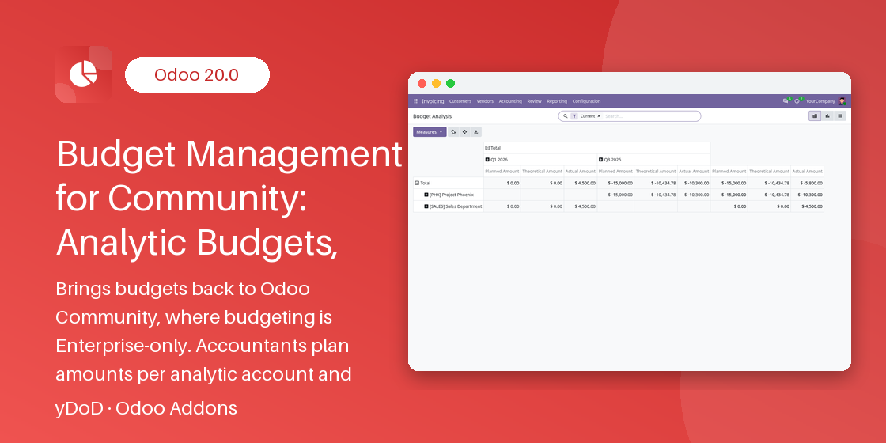

SEE IT IN ACTION
yDoD · ACCOUNTING
Odoo 20.0 Community & Enterprise

In Odoo Community there is no budgeting: controllers export analytic items to spreadsheets to compare what was planned with what was really spent or earned. Budget Management for Community adds budgets directly to the Accounting app.
You plan an amount per analytic account (cost centre, department or project) and per position — a label grouping one or more general ledger accounts, such as "Marketing Expenses" — for a period. The module then computes the actual amount from posted analytic items, the theoretical amount expected to date and the achievement %, and shows them in list, pivot and graph views.
Built for accountants, financial controllers and department managers of small and mid-sized companies who need planned vs actual financial control without exporting data or buying Enterprise. It depends only on the standard Invoicing / Accounting module.

Plan per analytic account and group of general ledger accounts for any period.
Actual amounts are summed from posted analytic items; draft entries are ignored.
Planned amount prorated by the days elapsed in the line period.
Expense lines spending ahead of plan turn red and appear under the Over Budget filter.
View Entries opens exactly the analytic items behind every actual amount.
Switch any list to pivot, bar, line or pie chart in one click.
Duplicate a validated budget with shifted dates and the same planned amounts.
Budget User and Budget Manager groups with per-company access rules.
Open Accounting → Accounting → Budgets and create a budget with its Name, Responsible, Company, Start Date and End Date. The status bar follows Draft → Confirmed → Validated → Done, with Cancelled and Reset to Draft for corrections.
Each line holds an Analytic Account, a Position label, the General Accounts it covers (empty means all accounts), its own Start / End Date inside the budget period and a Planned Amount in company currency.
The View Entries button on each budget line (form header and magnifier icon in the budget lines table) opens exactly the analytic items summed into its actual amount, so every figure can be audited down to the journal item.
Accounting → Reporting → Budget Analysis opens budget lines in pivot and graph views with Planned, Theoretical and Actual measures side by side, filtered on Current lines by default.
On a Validated or Done budget, Copy to Next Period creates a Draft budget named "... (Next Period)" with all budget and line dates shifted by the length of the period and the same planned amounts. Month ends such as 29 February are clamped correctly.
No. It depends only on the standard Invoicing / Accounting module of Odoo Community and uses no external Python library.
Only Budget Managers. Budget Users can read all budgets of their companies and create or edit budgets and lines while they are in Draft; they cannot delete budgets.
Yes. Each budget belongs to one company, users only see budgets of their allowed companies and the analytic account of a line must belong to the budget company or be shared.
Odoo stores costs as negative analytic amounts and revenue as positive ones. Enter expense budgets as negative planned amounts so that planned and actual can be compared directly.
No. Only analytic items of posted journal entries (and manual analytic items) are included in the actual amount.
Budgets and budget lines are removed with the module. Invoices, journal entries and analytic items are never modified by this module.
Need help with the setup, a question about the module or an adaptation to your budgeting process? We answer quickly and can extend the module for your company.
Author: Dody Ahmad Kusuma Jaya
Brand: yDoD
Odoo 20.0 Community & Enterprise
Work even better together with yDoD apps for Odoo 20.0.